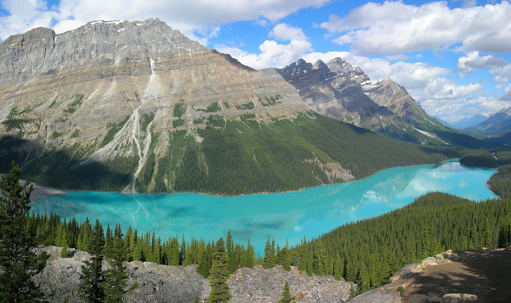

The Most top five Best Places In The canada
Niagara-Falls

Location: Ontario.
Best Time to Visit: June-August.
Info: A stunning set of waterfalls offering boat tours, scenic views, and vibrant nighttime illumination.
Banff_National Park

Location: Alberta.
Best Time to Visit: June-September.
Info: Canada’s oldest national park, known for turquoise lakes, snow-capped mountains, and abundant wildlife.
Cn Tower

Location: Toronto, Ontario.
Best Time to Visit: April-May or September-October.
Info: A towering landmark offering breathtaking city views and a thrilling glass floor experience
Old Quebec City

Location: Quebec City, Quebec.
Best Time to Visit: June-September.
Info: A UNESCO site featuring cobblestone streets, historic buildings, and European charm.
Whistler Ski Report

Location: British Columbia.
Best Time to Visit: December-February (winter sports) or June-August (summer activities).
Info: A world-renowned ski resort town offering year-round outdoor adventures.